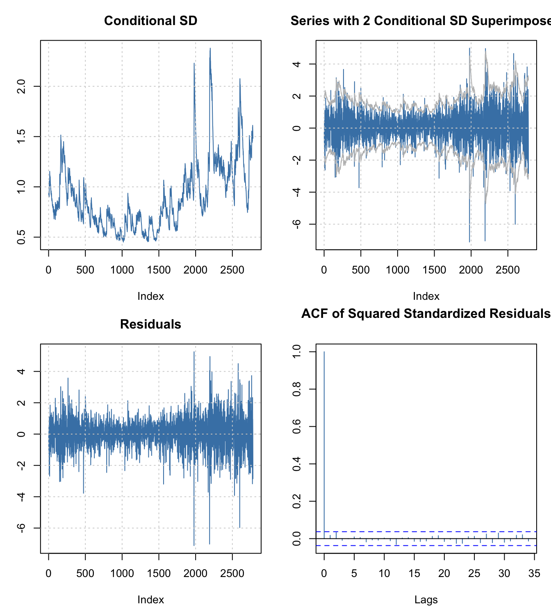
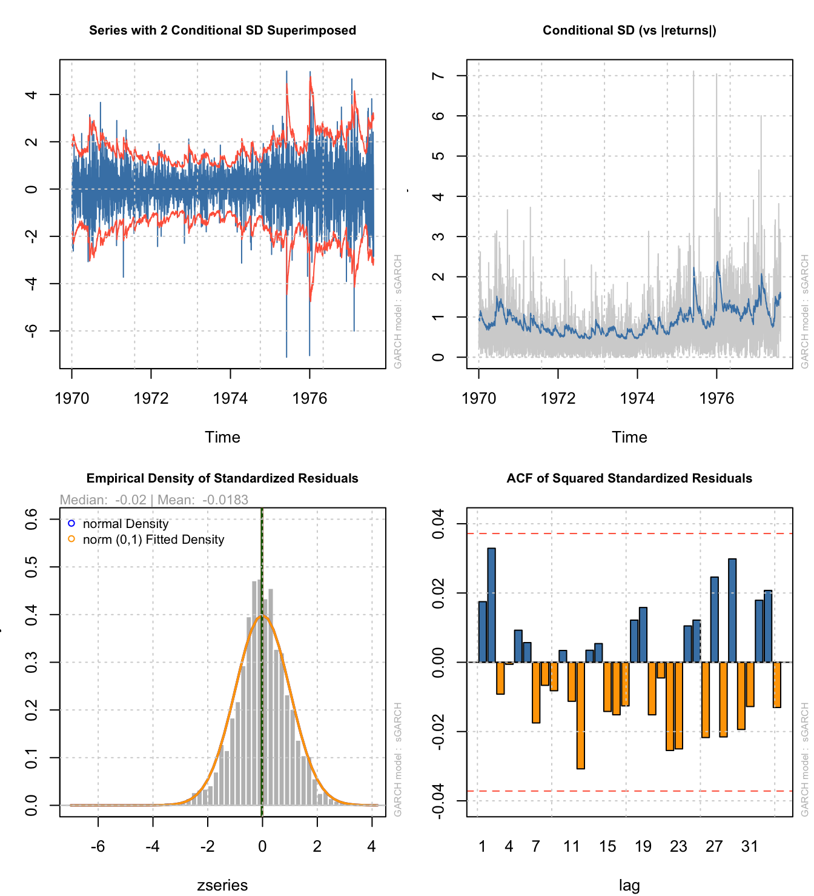

library(tseries)
library(fGarch)
library(rugarch)
library(MASS)ARCH/GARCH in R
tseries package (not recommended)
The most basic GARCH fitting I know is done in the tseries package. I do not recommend it because it does not allow you to easily combine the variance model with a mean model.
data(SP500)
tseries.arma <- arma(SP500,order=c(1,1))
summary(tseries.arma)
Call:
arma(x = SP500, order = c(1, 1))
Model:
ARMA(1,1)
Residuals:
Min 1Q Median 3Q Max
-7.245862 -0.460612 -0.002503 0.498085 4.749524
Coefficient(s):
Estimate Std. Error t value Pr(>|t|)
ar1 0.911630 0.056856 16.03 <2e-16 ***
ma1 -0.932451 0.048937 -19.05 <2e-16 ***
intercept 0.004304 0.002929 1.47 0.142
---
Signif. codes: 0 '***' 0.001 '**' 0.01 '*' 0.05 '.' 0.1 ' ' 1
Fit:
sigma^2 estimated as 0.8951, Conditional Sum-of-Squares = 2486.73, AIC = 7587.37tseries.garch <- garch(residuals(tseries.arma)[-1],order=c(1,1))
***** ESTIMATION WITH ANALYTICAL GRADIENT *****
I INITIAL X(I) D(I)
1 8.056347e-01 1.000e+00
2 5.000000e-02 1.000e+00
3 5.000000e-02 1.000e+00
IT NF F RELDF PRELDF RELDX STPPAR D*STEP NPRELDF
0 1 1.195e+03
1 4 1.179e+03 1.32e-02 6.30e-02 1.2e-01 1.9e+03 2.0e-01 6.00e+01
2 6 1.169e+03 8.89e-03 1.22e-02 4.2e-02 3.8e+00 7.0e-02 1.93e+01
3 8 1.148e+03 1.78e-02 2.01e-02 1.6e-01 2.5e+00 2.4e-01 1.14e+01
4 9 1.094e+03 4.65e-02 6.46e-02 5.6e-01 2.0e+00 4.9e-01 1.33e+01
5 11 1.049e+03 4.13e-02 6.16e-02 3.2e-02 3.3e+00 4.9e-02 8.36e+00
6 12 1.041e+03 8.24e-03 9.32e-03 3.8e-02 2.0e+00 4.9e-02 4.10e+01
7 13 1.024e+03 1.55e-02 2.31e-02 7.1e-02 2.0e+00 9.8e-02 2.06e+01
8 14 1.004e+03 1.96e-02 2.74e-02 7.1e-02 2.0e+00 9.8e-02 4.99e+00
9 15 9.792e+02 2.51e-02 2.77e-02 5.4e-02 2.0e+00 9.8e-02 9.22e+00
10 16 9.633e+02 1.63e-02 2.66e-02 5.3e-02 2.0e+00 9.8e-02 9.72e+00
11 17 9.608e+02 2.57e-03 2.95e-02 4.9e-02 2.0e+00 9.8e-02 9.17e+00
12 19 9.436e+02 1.79e-02 6.55e-02 5.9e-03 3.6e+00 1.1e-02 2.84e+00
13 20 9.355e+02 8.60e-03 1.15e-02 5.2e-03 2.0e+00 1.1e-02 8.72e+00
14 21 9.338e+02 1.81e-03 2.36e-03 5.2e-03 2.0e+00 1.1e-02 2.46e+00
15 22 9.313e+02 2.67e-03 3.47e-03 4.4e-03 2.0e+00 1.1e-02 1.36e+00
16 25 9.240e+02 7.80e-03 9.47e-03 1.8e-02 1.9e+00 4.4e-02 7.69e-01
17 28 9.238e+02 2.53e-04 1.16e-03 5.5e-04 3.0e+00 1.2e-03 7.50e-02
18 29 9.235e+02 3.26e-04 3.28e-04 4.6e-04 2.0e+00 1.2e-03 2.41e-02
19 30 9.234e+02 1.03e-04 1.40e-04 6.1e-04 3.6e+00 1.2e-03 2.60e-02
20 31 9.232e+02 2.67e-04 3.09e-04 1.2e-03 2.0e+00 2.5e-03 2.68e-02
21 32 9.231e+02 7.26e-05 4.07e-04 1.2e-03 1.5e+01 2.5e-03 1.79e-02
22 33 9.230e+02 4.79e-05 5.36e-04 1.0e-03 2.0e+00 2.5e-03 2.20e-02
23 34 9.227e+02 3.95e-04 4.24e-04 5.6e-04 2.0e+00 1.2e-03 9.10e-03
24 36 9.223e+02 4.70e-04 5.97e-04 2.7e-03 1.8e+00 7.1e-03 7.14e-03
25 38 9.221e+02 2.18e-04 3.01e-04 1.2e-03 1.4e+00 2.5e-03 9.48e-04
26 39 9.220e+02 6.27e-05 7.74e-05 9.3e-04 9.5e-01 2.5e-03 1.47e-04
27 40 9.220e+02 2.65e-05 6.35e-05 9.9e-04 8.5e-01 2.5e-03 9.74e-05
28 41 9.220e+02 7.69e-06 8.82e-06 7.9e-05 0.0e+00 2.0e-04 8.82e-06
29 42 9.220e+02 1.05e-07 9.11e-08 2.4e-05 0.0e+00 5.6e-05 9.11e-08
30 43 9.220e+02 1.06e-09 2.99e-10 2.9e-06 0.0e+00 7.5e-06 2.99e-10
31 44 9.220e+02 -3.14e-11 4.29e-12 2.3e-07 0.0e+00 5.4e-07 4.29e-12
***** RELATIVE FUNCTION CONVERGENCE *****
FUNCTION 9.219615e+02 RELDX 2.309e-07
FUNC. EVALS 44 GRAD. EVALS 31
PRELDF 4.289e-12 NPRELDF 4.289e-12
I FINAL X(I) D(I) G(I)
1 4.444827e-03 1.000e+00 -7.100e-02
2 5.091469e-02 1.000e+00 -4.831e-02
3 9.457935e-01 1.000e+00 -4.780e-02summary(tseries.garch)
Call:
garch(x = residuals(tseries.arma)[-1], order = c(1, 1))
Model:
GARCH(1,1)
Residuals:
Min 1Q Median 3Q Max
-7.045125 -0.550290 -0.003681 0.585257 4.015891
Coefficient(s):
Estimate Std. Error t value Pr(>|t|)
a0 0.004445 0.001063 4.182 2.89e-05 ***
a1 0.050915 0.004427 11.500 < 2e-16 ***
b1 0.945793 0.004771 198.236 < 2e-16 ***
---
Signif. codes: 0 '***' 0.001 '**' 0.01 '*' 0.05 '.' 0.1 ' ' 1
Diagnostic Tests:
Jarque Bera Test
data: Residuals
X-squared = 833.78, df = 2, p-value < 2.2e-16
Box-Ljung test
data: Squared.Residuals
X-squared = 0.38262, df = 1, p-value = 0.5362# estimates of iid normal errors omega_t
(tseries.omega <- head(residuals(tseries.garch)))[1] NA -0.6894459 0.5386388 -0.9365332 -0.5005003 0.4036426# estimates of past conditional sd sigma_t
(tseries.sigma_past <- head(fitted(tseries.garch)[,1]))[1] NA 1.141019 1.125747 1.105339 1.102067 1.081042# forecasts of future conditional sd sigma_t
(tseries.sigma_future <- head(predict(tseries.garch)[,1]))[1] NA 1.141019 1.125747 1.105339 1.102067 1.081042In my opinion, this package has the most limited implementation and is strictly dominated for every use case by one of the two packages below.
fGarch package (functional but not my first choice)
ARCH/GARCH analysis in R was, in years past, primarily performed through the fGarch package, which offers model definition, prediction, plotting, etc. through familiar interfaces. The package is still maintained and offers solid support for basic and intermediate use cases.
Although not shown in the code below, the predict() method simultaneously predicts for both the mean and the variance (we are extracting only the variance).
fgarch.armagarch <- garchFit(SP500 ~ arma(1,1) + garch(1,1), data=SP500)
Series Initialization:
ARMA Model: arma
Formula Mean: ~ arma(1, 1)
GARCH Model: garch
Formula Variance: ~ garch(1, 1)
ARMA Order: 1 1
Max ARMA Order: 1
GARCH Order: 1 1
Max GARCH Order: 1
Maximum Order: 1
Conditional Dist: norm
h.start: 2
llh.start: 1
Length of Series: 2780
Recursion Init: mci
Series Scale: 0.9477464Warning in arima(.series$x, order = c(u, 0, v), include.mean = include.mean):
possible convergence problem: optim gave code = 1Parameter Initialization:
Initial Parameters: $params
Limits of Transformations: $U, $V
Which Parameters are Fixed? $includes
Parameter Matrix:
U V params includes
mu -0.48275223 0.4827522 0.04829772 TRUE
ar1 -0.99999999 1.0000000 -0.17030411 TRUE
ma1 -0.99999999 1.0000000 0.18933184 TRUE
omega 0.00000100 100.0000000 0.10000000 TRUE
alpha1 0.00000001 1.0000000 0.10000000 TRUE
gamma1 -0.99999999 1.0000000 0.10000000 FALSE
beta1 0.00000001 1.0000000 0.80000000 TRUE
delta 0.00000000 2.0000000 2.00000000 FALSE
skew 0.10000000 10.0000000 1.00000000 FALSE
shape 1.00000000 10.0000000 4.00000000 FALSE
Index List of Parameters to be Optimized:
mu ar1 ma1 omega alpha1 beta1
1 2 3 4 5 7
Persistence: 0.9
--- START OF TRACE ---
Selected Algorithm: nlminb
R coded nlminb Solver:
0: 3707.8226: 0.0482977 -0.170304 0.189332 0.100000 0.100000 0.800000
1: 3695.1512: 0.0483008 -0.169151 0.190394 0.0787674 0.103273 0.793089
2: 3683.1731: 0.0483048 -0.167750 0.191673 0.0771166 0.122061 0.805435
3: 3670.4420: 0.0483162 -0.164180 0.194885 0.0364971 0.141012 0.809289
4: 3660.5110: 0.0483495 -0.155768 0.202148 0.0273841 0.154717 0.849936
5: 3654.5379: 0.0484140 -0.147342 0.207997 0.00549702 0.128500 0.877750
6: 3642.7519: 0.0485273 -0.135221 0.215353 0.0234248 0.0902875 0.885425
7: 3633.9451: 0.0485836 -0.156626 0.189896 0.0136500 0.0797515 0.912497
8: 3633.0063: 0.0485839 -0.156566 0.189943 0.0105706 0.0785118 0.911182
9: 3631.5382: 0.0485888 -0.156336 0.189948 0.0110774 0.0774069 0.914531
10: 3628.8437: 0.0486198 -0.155502 0.189330 0.00610671 0.0651190 0.931398
11: 3628.8374: 0.0486200 -0.155467 0.189358 0.00690257 0.0652188 0.931793
12: 3628.6730: 0.0486201 -0.155451 0.189370 0.00658121 0.0649747 0.931600
13: 3628.5997: 0.0486210 -0.155299 0.189488 0.00669202 0.0641082 0.931629
14: 3628.4960: 0.0486285 -0.155665 0.188738 0.00693647 0.0631391 0.932849
15: 3628.3416: 0.0486403 -0.155732 0.188093 0.00658872 0.0618761 0.933853
16: 3627.7023: 0.0487967 -0.146041 0.190608 0.00583606 0.0549905 0.941102
17: 3627.6803: 0.0487968 -0.146045 0.190601 0.00569596 0.0549451 0.941058
18: 3627.6708: 0.0487975 -0.146078 0.190535 0.00557499 0.0550521 0.941321
19: 3627.6631: 0.0488039 -0.146242 0.190071 0.00541304 0.0547618 0.941502
20: 3627.6405: 0.0488109 -0.146398 0.189590 0.00547456 0.0545710 0.941794
21: 3627.6121: 0.0488414 -0.146682 0.187899 0.00534687 0.0538378 0.942507
22: 3627.6109: 0.0488415 -0.146681 0.187896 0.00538884 0.0538604 0.942550
23: 3627.6098: 0.0488430 -0.146647 0.187864 0.00536123 0.0538500 0.942546
24: 3627.6089: 0.0488460 -0.146581 0.187797 0.00535714 0.0538544 0.942608
25: 3627.6071: 0.0488527 -0.146427 0.187652 0.00533035 0.0538425 0.942600
26: 3627.0126: 0.0582226 0.0691733 -0.0144367 0.00556139 0.0577318 0.939071
27: 3626.9127: 0.0590365 0.0879504 -0.0393038 0.00579615 0.0551005 0.940415
28: 3626.8679: 0.0577092 0.100899 -0.0568744 0.00483480 0.0520673 0.945062
29: 3626.8128: 0.0559977 0.102990 -0.0584852 0.00482603 0.0520600 0.944805
30: 3626.7555: 0.0542885 0.105033 -0.0606813 0.00516634 0.0527725 0.943858
31: 3626.7335: 0.0545761 0.0799272 -0.0362296 0.00520082 0.0531745 0.943421
32: 3626.7274: 0.0513309 0.0971461 -0.0517508 0.00521763 0.0532398 0.943295
33: 3626.7245: 0.0527050 0.0870950 -0.0425974 0.00535179 0.0536743 0.942666
34: 3626.7237: 0.0529863 0.0806323 -0.0359524 0.00527602 0.0533714 0.943089
35: 3626.7234: 0.0525806 0.0860125 -0.0414312 0.00528154 0.0534703 0.942988
36: 3626.7234: 0.0526617 0.0850928 -0.0404383 0.00529002 0.0534592 0.942980
37: 3626.7234: 0.0526679 0.0850071 -0.0403745 0.00528744 0.0534593 0.942986
38: 3626.7234: 0.0526638 0.0850516 -0.0404173 0.00528753 0.0534593 0.942986
Final Estimate of the Negative LLH:
LLH: 3477.526 norm LLH: 1.250908
mu ar1 ma1 omega alpha1 beta1
0.049911944 0.085051577 -0.040417326 0.004749381 0.053459335 0.942985580
R-optimhess Difference Approximated Hessian Matrix:
mu ar1 ma1 omega alpha1
mu -5487.50292 -270.4325 27.02373 792.2338 226.0816
ar1 -270.43248 -2546.3381 -2516.58109 -1623.7710 -426.8226
ma1 27.02373 -2516.5811 -2520.78590 -1624.0013 -415.2228
omega 792.23377 -1623.7710 -1624.00131 -1800871.1748 -629448.6023
alpha1 226.08164 -426.8226 -415.22283 -629448.6023 -357310.5359
beta1 -296.61877 -1036.8765 -969.35042 -803221.5863 -402755.4115
beta1
mu -296.6188
ar1 -1036.8765
ma1 -969.3504
omega -803221.5863
alpha1 -402755.4115
beta1 -480647.1975
attr(,"time")
Time difference of 0.01912594 secs
--- END OF TRACE ---
Time to Estimate Parameters:
Time difference of 0.1539989 secssummary(fgarch.armagarch)
Title:
GARCH Modelling
Call:
garchFit(formula = SP500 ~ arma(1, 1) + garch(1, 1), data = SP500)
Mean and Variance Equation:
data ~ arma(1, 1) + garch(1, 1)
<environment: 0x14d9263b8>
[data = SP500]
Conditional Distribution:
norm
Coefficient(s):
mu ar1 ma1 omega alpha1 beta1
0.0499119 0.0850516 -0.0404173 0.0047494 0.0534593 0.9429856
Std. Errors:
based on Hessian
Error Analysis:
Estimate Std. Error t value Pr(>|t|)
mu 0.049912 0.018630 2.679 0.00738 **
ar1 0.085052 0.237099 0.359 0.71981
ma1 -0.040417 0.237614 -0.170 0.86493
omega 0.004749 0.001664 2.853 0.00433 **
alpha1 0.053459 0.008028 6.659 2.75e-11 ***
beta1 0.942986 0.008508 110.839 < 2e-16 ***
---
Signif. codes: 0 '***' 0.001 '**' 0.01 '*' 0.05 '.' 0.1 ' ' 1
Log Likelihood:
-3477.526 normalized: -1.250908
Description:
Wed Feb 25 16:52:23 2026 by user:
Standardised Residuals Tests:
Statistic p-Value
Jarque-Bera Test R Chi^2 743.5736024 0.00000000
Shapiro-Wilk Test R W 0.9797477 0.00000000
Ljung-Box Test R Q(10) 17.1068851 0.07203209
Ljung-Box Test R Q(15) 28.6103664 0.01804608
Ljung-Box Test R Q(20) 32.3070958 0.04013397
Ljung-Box Test R^2 Q(10) 5.6342460 0.84499961
Ljung-Box Test R^2 Q(15) 9.3117155 0.86066293
Ljung-Box Test R^2 Q(20) 12.1598580 0.91046386
LM Arch Test R TR^2 8.7157933 0.72699462
Information Criterion Statistics:
AIC BIC SIC HQIC
2.506134 2.518933 2.506124 2.510755 # estimates of iid normal errors omega_t
(fgarch.omega <- head(residuals(fgarch.armagarch,standardize=TRUE)))[1] 0.0000000 -0.9665403 -1.0755090 0.4782480 -1.3808938 -0.7108837# estimates of past conditional sd sigma_t
(fgarch.sigma_past <- head(fgarch.armagarch@sigma.t))[1] 0.9487024 0.9238347 0.9231379 0.9279241 0.9095212 0.9322778# forecasts of future conditional sd sigma_t
(fgarch.sigma_future <- head(predict(fgarch.armagarch)[,3]))[1] 1.585127 1.583807 1.582490 1.581178 1.579868 1.578563fGARCH also allows the user to create fixed specifications which can be used for simulation purposes, and it has a nice array of diagnostic plotting tools with some user interactivity. The plots below come from a menu of 16 total diagnostics which the user can shuffle back and forth:
par(mfrow=c(2,2),mar=c(4,3,3,1)+0.1)
plot(fgarch.armagarch,which=c(2,3,7,11))
Ultimately, for student work, fGarch is more than enough “horsepower” for most jobs. I was tempted to use it for the two previous pages on ARCH and GARCH models. However, it has lost some industry support in favor of a newer package with more functionality and control.
rugarch package (reluctantly recommended)
rugarch (R univariate GARCH, as opposed to the companion package rmgarch for R multivariate GARCH) is more actively developed, has added more functionality, allows the user more control over the fitting details and estimation routines, contains more diagnostic tests, and has become more standard in industry use, partly because of various helper funcitons that directly solve common quesitons such as value-at-risk (VaR).
It would be very easy to recommend rugarch except that the interface is less intuitive and “user-friendly” than the earlier packages. However, on balance it would be my pick if you had to familiarize yourself with a package you intended to use professionally.
Users should specify a mean model (if any) and a variance model separately. Simulation, forecasting, and bootstrapping methods can all be used either with models fit to data or with predefined model specifications.
Although not used in the example below, external regressors can be added to both the mean and the variance equations, which is perhaps the most important upgrade over the fGarch functionality. This would allow you, for example, to add Fourier harmonics to adjust the seasonality of a mean model, or to perform a Fama-French or CAPM-style stock price analysis which controls for market behavior.
rug.spec <- ugarchspec(variance.model=list(model='sGARCH',
garchOrder=c(1,1)),
mean.model=list(armaOrder=c(1,1)))
(rugarch.armagarch <- ugarchfit(spec=rug.spec,data=SP500))
*---------------------------------*
* GARCH Model Fit *
*---------------------------------*
Conditional Variance Dynamics
-----------------------------------
GARCH Model : sGARCH(1,1)
Mean Model : ARFIMA(1,0,1)
Distribution : norm
Optimal Parameters
------------------------------------
Estimate Std. Error t value Pr(>|t|)
mu 0.054483 0.014786 3.68483 0.000229
ar1 0.069644 0.236881 0.29400 0.768756
ma1 -0.024941 0.236607 -0.10541 0.916049
omega 0.004749 0.001764 2.69217 0.007099
alpha1 0.053445 0.008475 6.30652 0.000000
beta1 0.942996 0.009100 103.62261 0.000000
Robust Standard Errors:
Estimate Std. Error t value Pr(>|t|)
mu 0.054483 0.013700 3.97684 0.000070
ar1 0.069644 0.126453 0.55075 0.581807
ma1 -0.024941 0.129047 -0.19327 0.846746
omega 0.004749 0.002715 1.74916 0.080264
alpha1 0.053445 0.015444 3.46056 0.000539
beta1 0.942996 0.016363 57.62910 0.000000
LogLikelihood : -3477.58
Information Criteria
------------------------------------
Akaike 2.5062
Bayes 2.5190
Shibata 2.5062
Hannan-Quinn 2.5108
Weighted Ljung-Box Test on Standardized Residuals
------------------------------------
statistic p-value
Lag[1] 0.1453 7.030e-01
Lag[2*(p+q)+(p+q)-1][5] 6.1896 3.578e-05
Lag[4*(p+q)+(p+q)-1][9] 9.9892 9.319e-03
d.o.f=2
H0 : No serial correlation
Weighted Ljung-Box Test on Standardized Squared Residuals
------------------------------------
statistic p-value
Lag[1] 0.8522 0.3559
Lag[2*(p+q)+(p+q)-1][5] 3.4549 0.3302
Lag[4*(p+q)+(p+q)-1][9] 4.2235 0.5514
d.o.f=2
Weighted ARCH LM Tests
------------------------------------
Statistic Shape Scale P-Value
ARCH Lag[3] 0.2352 0.500 2.000 0.6277
ARCH Lag[5] 0.3788 1.440 1.667 0.9186
ARCH Lag[7] 0.8226 2.315 1.543 0.9406
Nyblom stability test
------------------------------------
Joint Statistic: 1.1067
Individual Statistics:
mu 0.20619
ar1 0.07068
ma1 0.07197
omega 0.16096
alpha1 0.36750
beta1 0.22933
Asymptotic Critical Values (10% 5% 1%)
Joint Statistic: 1.49 1.68 2.12
Individual Statistic: 0.35 0.47 0.75
Sign Bias Test
------------------------------------
t-value prob sig
Sign Bias 1.069 0.2851017
Negative Sign Bias 1.580 0.1143060
Positive Sign Bias 1.625 0.1041982
Joint Effect 19.905 0.0001776 ***
Adjusted Pearson Goodness-of-Fit Test:
------------------------------------
group statistic p-value(g-1)
1 20 63.94 9.060e-07
2 30 70.22 2.833e-05
3 40 96.43 9.084e-07
4 50 114.50 3.680e-07
Elapsed time : 0.07599711 # estimates of iid normal errors omega_t
(rugarch.omega <- head(residuals(rugarch.armagarch,standardize=TRUE)))Warning: object timezone ('UTC') is different from system timezone ('')
NOTE: set 'options(xts_check_TZ = FALSE)' to disable this warning
This note is displayed once per session [,1]
1970-01-02 -0.3306029
1970-01-03 -0.9779862
1970-01-04 -1.0731489
1970-01-05 0.4764113
1970-01-06 -1.3781128
1970-01-07 -0.7088005# estimates of past conditional sd sigma_t
(rugarch.sigma_past <- head(sigma(rugarch.armagarch)))Warning: object timezone ('UTC') is different from system timezone ('') [,1]
1970-01-02 0.9478858
1970-01-03 0.9258873
1970-01-04 0.9257269
1970-01-05 0.9303843
1970-01-06 0.9118774
1970-01-07 0.9344897# forecasts of future conditional sd sigma_t
(rugarch.sigma_future <- head(sigma(ugarchforecast(rugarch.armagarch)))) 1977-08-12
T+1 1.584798
T+2 1.583476
T+3 1.582158
T+4 1.580843
T+5 1.579531
T+6 1.578224The rugarch package also contains most of the same plotting tools as fGarch:
par(mfrow=c(2,2),mar=c(4,3,3,1)+0.1)
plot(rugarch.armagarch,which=c(1))
plot(rugarch.armagarch,which=c(3))
plot(rugarch.armagarch,which=c(8))
plot(rugarch.armagarch,which=c(11))
In the end, your results should not vary wildly between fGarch and rugarch, though the more limited functionality of tseries may well affect your results:
# Standardized residuals:
cbind(tseries=tseries.omega,
fGarch=fgarch.omega,
rugarch=rugarch.omega)Warning: object timezone ('UTC') is different from system timezone ('') tseries fGarch rugarch
1970-01-02 NA 0.0000000 -0.3306029
1970-01-03 -0.6894459 -0.9665403 -0.9779862
1970-01-04 0.5386388 -1.0755090 -1.0731489
1970-01-05 -0.9365332 0.4782480 0.4764113
1970-01-06 -0.5005003 -1.3808938 -1.3781128
1970-01-07 0.4036426 -0.7108837 -0.7088005# In-sample conditional volatility:
cbind(tseries=tseries.sigma_past,
fGarch=fgarch.sigma_past,
rugarch=rugarch.sigma_past)Warning: object timezone ('UTC') is different from system timezone ('') tseries fGarch rugarch
1970-01-02 NA 0.9487024 0.9478858
1970-01-03 1.141019 0.9238347 0.9258873
1970-01-04 1.125747 0.9231379 0.9257269
1970-01-05 1.105339 0.9279241 0.9303843
1970-01-06 1.102067 0.9095212 0.9118774
1970-01-07 1.081042 0.9322778 0.9344897# Forecasted conditional volatility:
cbind(tseries=tseries.sigma_future,
fGarch=fgarch.sigma_future,
rugarch=c(rugarch.sigma_future)) tseries fGarch rugarch
[1,] NA 1.585127 1.584798
[2,] 1.141019 1.583807 1.583476
[3,] 1.125747 1.582490 1.582158
[4,] 1.105339 1.581178 1.580843
[5,] 1.102067 1.579868 1.579531
[6,] 1.081042 1.578563 1.578224